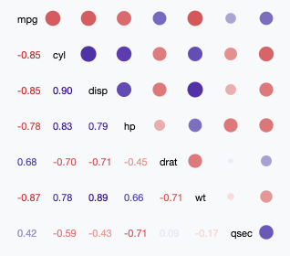

World Happiness
The World Happiness Report reported by the UN is a survey of global happiness that ranks 156 countries by how happy their citizens perceive themselves to be. The ranks and scores use data from the 2015-2019 Gallup World Polls. The scores are based on the extent to which six factors – economy (GDP), family or social support, health/life expectancy, freedom, trust/absence of corruption, and generosity – contribute to making life happier than a theoretical dystopian world. This overview of the report analyzes the relationships between factors and provides an interactive world map to view how each country perceives their own happiness.
Correlogram of Happiness Factors
**Needs description of how to read the chart.** Donec et turpis scelerisque, dapibus ipsum nec, ultrices nisi. Donec nibh est, consequat sed euismod eu, semper ac nisi. Mauris nec venenatis eros. Praesent id mauris ante. Integer mattis consectetur nibh, at pharetra risus. Maecenas ultrices, enim molestie porttitor malesuada, felis leo accumsan eros, a efficitur massa neque id odio. Nunc pulvinar posuere ante, vel facilisis enim rutrum nec. Praesent ac bibendum quam, non malesuada velit. Ut semper molestie nibh, at pharetra lectus mollis vitae. Vestibulum vitae massa vitae velit malesuada consequat ut in nunc. Suspendisse ac libero non tortor convallis fermentum.
Relationship Between Individual Happiness Factors

Maybe the bubbles are colored by region and have popups with country names. Praesent feugiat varius ultricies. Maecenas congue iaculis mauris id aliquam. Aenean vulputate, odio non convallis molestie, purus quam lacinia eros, porttitor ultricies orci enim non lorem. Pellentesque eu dui enim. Sed varius, orci quis euismod viverra, erat diam blandit lacus, et imperdiet dui purus non justo. Donec scelerisque, nulla mattis maximus volutpat, augue sem hendrerit massa, id commodo ante lectus ut lorem. Nulla a elit sagittis, consectetur neque nec, semper odio. Praesent nulla magna, dignissim vitae tortor eget, scelerisque semper arcu.